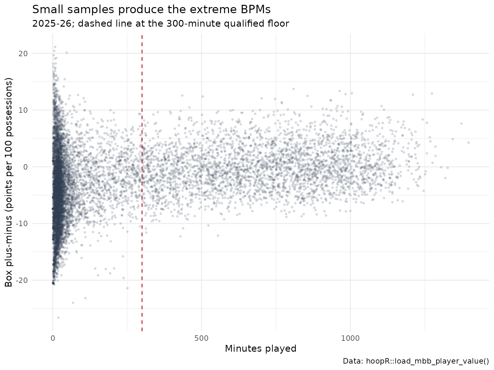

College Basketball Player Value Model: Box Plus-Minus for NCAA Men's Players
Saiem Gilani
Source:vignettes/articles/college-basketball-player-value-model.Rmd
college-basketball-player-value-model.RmdBox plus-minus (BPM) estimates how many points per 100
possessions a player adds over an average player, using only what
appears in the box score. It cannot see a great screen or a
help rotation, but it is stable in small samples, which on/off measures
are not. load_mbb_player_value() returns offensive,
defensive and total box plus-minus for every men’s college
player-season. This article explains the model, how reliable it is, and
how to filter it sensibly.
The official model card is player_value.md
in the hoopR-mbb-data repository. Numbers below are
computed here from the published release unless labeled “as reported in
the model card”.
What does the dataset contain?
| Column | Meaning |
|---|---|
box_obpm |
Offensive box plus-minus: points per 100 possessions added on offense. |
box_dbpm |
Defensive box plus-minus. |
box_bpm |
box_obpm + box_dbpm. |
min |
Minutes played. |
qualified |
TRUE when min >= 300, the floor at
which the spread of BPM stops shrinking (see below). |
player_id, player, team_id,
season
|
Identifiers; team_id is the ESPN team id. |
How is BPM computed?
As described in the model card:
- Per-100 box features. For each player, sixteen rates from the box score: usage, true shooting and effective FG%, assist, turnover, offensive and defensive rebound, block and steal percentages, free-throw rate, shot shares at the rim, mid-range and three, and points, rebounds and assists per 100 possessions.
- Standardize and score. Each feature is standardized (z-scores clipped at 4) and scored through ridge-regression coefficients fit at the team level, separately for offense and defense.
- Team constraint. A uniform adjustment per team makes the minutes-weighted sum of its players’ scores equal the team’s adjusted efficiency margin, so BPM adds up to team strength. (The team ratings are the subject of the team ratings article.)
The model is compute-on-demand: every publish recomputes BPM from the
current season data, and the fitted coefficients ship beside the release
as mbb_player_value_coefficients.json.
coef_url <- paste0(
"https://github.com/sportsdataverse/sportsdataverse-data/releases/download/",
"mbb_player_value/mbb_player_value_coefficients.json"
)
co <- tryCatch(jsonlite::fromJSON(coef_url), error = function(e) NULL)
if (!is.null(co)) {
cat("method:", co$method, "| train seasons:", paste(co$train_seasons, collapse = ", "),
"| ridge lambda offense/defense:", co$lambda_o, "/", co$lambda_d,
"| z clip:", co$z_clip, "| fit floor (minutes):", co$min_minutes, "\n")
# coefficient vectors are [intercept, slopes...] over feature_cols
tibble::tibble(
feature = co$feature_cols,
obpm_slope = co$obpm_coef[-1],
dbpm_slope = co$dbpm_coef[-1]
) |>
dplyr::arrange(dplyr::desc(abs(obpm_slope) + abs(dbpm_slope))) |>
dplyr::mutate(dplyr::across(-feature, \(x) round(x, 3)))
}
#> method: team_constrained_game_z | train seasons: 2025, 2026 | ridge lambda offense/defense: 300 / 100 | z clip: 4 | fit floor (minutes): 150
#> # A tibble: 16 × 3
#> feature obpm_slope dbpm_slope
#> <chr> <dbl> <dbl>
#> 1 pts_per100 2.35 -2.02
#> 2 usage -2.40 1.64
#> 3 ast_per100 1.59 -1.23
#> 4 ts_pct 1.89 0.304
#> 5 reb_per100 1.2 0.337
#> 6 tov_pct -1.25 0.174
#> 7 rim_share -0.752 0.56
#> 8 blk_pct 0.691 -0.531
#> 9 ftr 0.527 -0.538
#> 10 three_share 0.455 -0.353
#> 11 mid_share 0.442 -0.301
#> 12 efg_pct -0.564 0.103
#> 13 ast_pct -0.051 0.458
#> 14 oreb_pct 0.325 -0.106
#> 15 dreb_pct -0.325 0.106
#> 16 stl_pct 0.018 0.28Each slope is the change in BPM for a one-standard-deviation change in that feature, so slopes are directly comparable. Usage and efficiency carry opposite signs on offense: volume is penalized until it is efficient. Intercepts are absorbed by the team adjustment.
Loading the ratings
library(hoopR)
library(dplyr)
library(ggplot2)
pv <- load_mbb_player_value(seasons = 2020:2026)
pv |>
group_by(season) |>
summarise(players = n(), total_minutes = round(sum(min)),
qualified_players = sum(qualified, na.rm = TRUE))
#> # A tibble: 7 × 4
#> season players total_minutes qualified_players
#> <int> <int> <dbl> <int>
#> 1 2020 8750 2324478 2915
#> 2 2021 6837 1725931 2477
#> 3 2022 9359 2404751 2971
#> 4 2023 9717 2509140 3024
#> 5 2024 9838 2516161 3056
#> 6 2025 9795 2535605 3065
#> 7 2026 9990 2539283 3114Why the 300-minute qualified flag?
The file keeps every player, including those with a few minutes. The most extreme BPM values belong to players with tiny samples. The spread of BPM by minutes played shows where it settles:
pv |>
mutate(minutes_bin = cut(min, c(0, 50, 100, 200, 300, 400, 600, 800, 1000, Inf),
right = FALSE, dig.lab = 4)) |>
group_by(minutes_bin) |>
summarise(players = n(), sd_box_bpm = round(sd(box_bpm), 2),
abs_bpm_p99 = round(quantile(abs(box_bpm), 0.99), 2))
#> # A tibble: 9 × 4
#> minutes_bin players sd_box_bpm abs_bpm_p99
#> <fct> <int> <dbl> <dbl>
#> 1 [0,50) 33249 6.89 18.4
#> 2 [50,100) 4227 5.19 13.9
#> 3 [100,200) 3498 4.84 13.2
#> 4 [200,300) 2690 4.43 12.2
#> 5 [300,400) 2653 4.03 10.1
#> 6 [400,600) 5093 3.97 10.2
#> 7 [600,800) 5321 3.76 9.89
#> 8 [800,1000) 4799 3.69 9.91
#> 9 [1000,Inf) 2756 3.48 9.33
pv |>
filter(season == 2026) |>
ggplot(aes(min, box_bpm)) +
geom_point(alpha = 0.15, size = 0.7, colour = "#2C3D50") +
geom_vline(xintercept = 300, colour = "#B2182B", linetype = "dashed") +
labs(
title = "Small samples produce the extreme BPMs",
subtitle = "2025-26; dashed line at the 300-minute qualified floor",
x = "Minutes played", y = "Box plus-minus (points per 100 possessions)",
caption = "Data: hoopR::load_mbb_player_value()"
) +
theme_minimal()
As reported in the model card, the floor was set where the standard
deviation of BPM first comes within 10% of its plateau at 600 to 800
minutes, using the published 2014-2026 seasons. Filter with
qualified instead of re-deriving a threshold. (The model’s
own 150-minute fit floor only governs the team-sum weights; the two
floors answer different questions.)
How reliable is it?
A box-score model’s main virtue is persistence: a returning player’s BPM should carry over from season to season even with college basketball’s roster churn.
q <- pv |> filter(qualified) |> distinct(player_id, season, .keep_all = TRUE)
yoy <- q |>
select(player_id, season, box_bpm) |>
inner_join(q |> transmute(player_id, season = season - 1, box_bpm_next = box_bpm),
by = c("player_id", "season"))
q26 <- filter(q, season == 2026)
c(
yoy_pairs = nrow(yoy),
yoy_r = round(cor(yoy$box_bpm, yoy$box_bpm_next), 3),
qualified_2026 = nrow(q26),
cor_obpm_dbpm_2026 = round(cor(q26$box_obpm, q26$box_dbpm), 3)
)
#> yoy_pairs yoy_r qualified_2026 cor_obpm_dbpm_2026
#> 10106.000 0.751 3114.000 0.151Year-over-year correlation for qualified players is high (the model card reports 0.767 over all published seasons), and the offensive and defensive components are only weakly correlated, so they carry different information.
Who rated highest in 2025-26?
team_names <- load_mbb_team_box(seasons = 2026) |>
distinct(team_id = as.character(team_id), team = team_display_name)
q26 |>
mutate(team_id = as.character(team_id)) |>
left_join(team_names, by = "team_id") |>
arrange(desc(box_bpm)) |>
select(player, team, min, box_obpm, box_dbpm, box_bpm) |>
mutate(min = round(min), across(starts_with("box"), \(x) round(x, 2))) |>
head(15)
#> # A tibble: 15 × 6
#> player team min box_obpm box_dbpm box_bpm
#> <chr> <chr> <dbl> <dbl> <dbl> <dbl>
#> 1 Tobe Awaka Arizona Wildcats 809 7.33 6.4 13.7
#> 2 Oscar Cluff Purdue Boilermakers 964 10.1 3.29 13.4
#> 3 Morez Johnson Jr. Michigan Wolverines 1005 7.16 5.82 13.0
#> 4 Cameron Boozer Duke Blue Devils 1274 10.4 2.49 12.9
#> 5 Motiejus Krivas Arizona Wildcats 984 8.77 4.05 12.8
#> 6 Yaxel Lendeborg Michigan Wolverines 1210 9.59 3.12 12.7
#> 7 Kalifa Sakho Houston Cougars 435 5.48 7.1 12.6
#> 8 Rueben Chinyelu Florida Gators 856 5.98 6.53 12.5
#> 9 Micah Handlogten Florida Gators 504 4.38 8.01 12.4
#> 10 Patrick Ngongba II Duke Blue Devils 702 8.35 3.73 12.1
#> 11 Keba Keita BYU Cougars 747 7.38 4.58 12.0
#> 12 Ernest Udeh Jr. Miami Hurricanes 933 6.64 5.09 11.7
#> 13 Aday Mara Michigan Wolverines 935 7.74 3.98 11.7
#> 14 Maliq Brown Duke Blue Devils 769 2.67 8.72 11.4
#> 15 Sananda Fru Louisville Cardinals 770 7.11 4.11 11.2BPM versus RAPM
Box plus-minus and on/off RAPM (college RAPM model) deliberately measure different things. BPM sees only the box score, so it is stable in small samples but blind to screening, defensive attention and spacing. RAPM sees everything that changes the score but is noisy for low-minute players. Use them as cross-references. The natural hybrid, a RAPM that shrinks toward a box-score prior, is what the NBA player impact suite does with its adj-RAPM column.
Limitations
- Box-score blind spots, as above; defense is especially hard to see in a box score.
- Context. Rates depend on role and teammates; a high-usage scorer on a weak team and a role player on a strong one are scored on the same coefficients.
- Team constraint. Because players sum to the team’s adjusted margin, a player on a strong team inherits some of that strength.
-
Low-minute rows. They are published, flagged
qualified = FALSE. Filter them before ranking.
Where to go next
- College basketball RAPM model and team ratings model.
- NBA player impact model for SPM, BPM and adj-RAPM in the NBA.
- Basketball advanced metrics for the rates (usage, TS%, eFG%) BPM is built from.
- Reference:
load_mbb_player_value()in the Model Dataset Loaders section.